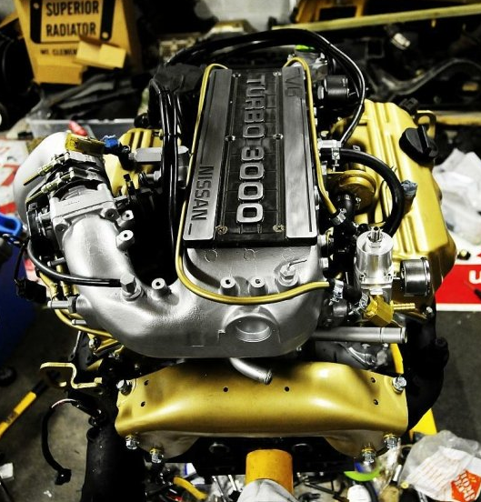
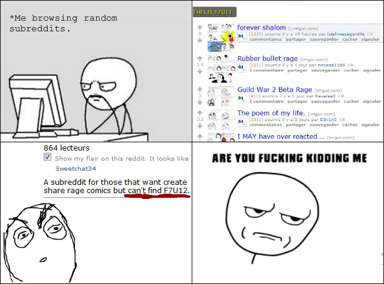

-
Alrighty, so I'll be ordering an aftermarket FPR soon here, and I'm confused on just how to run the lines when using the factory fuel rails. I'll be using either and Aeromotive A1000 or the equivalent Fuel Lab unit.
So I understand that the fuel return line on the bottom goes to the factory fuel return line, obviously. With the lines on the fuel rail, am I running the fuel filter line to one side of the fuel rail, and then the other side of the rail running to one of the inlet ports on the FPR? And then I just plug the second unused inlet port?
The only other way I can see routing it is feeding the fuel filter line into one of the inlet ports, and then feeding both sides of the rail (using a Tee) from the other port. This seems like it doesn't make much sense to me, but I like to be sure of things beforehand. :lol:
Thanks guys!
86T GLL -
i had toiled with this when i was doing my fpr setup. i made some custom feed lines, but its been a long temporary fix until i get my forward facing intake.
basically, feed line goes from stock filter location, to stock feed location. then the front two rail ports that go into the angled ports on the stock FPR go to some hard lines with injection hose to couple them.
then it goes to the fpr. the bottom port goes to the tank return.
it works well but in cold weather it leaks a bit. but now that it's been cycled through two winters, it barely leaks anymore due to replacing the hose a lot and getting it to be leak free. i think i used 5/16 hose onto 3/8 fuel/brake line that i bent up to look as shown below.
but ideally, if you have the FPR located off to the side, you can run some injection hose to the FPR from the front ports. it's easier and more manageable that way.


DZ and SATAN have some nice photos of their setup, and Racinjitter mounted his FPR up front and ran lines to the same area but it wouldnt work for my application due to my rad mount. -
D'oh, for some reason I was thinking that the rail was fed through the front rail ports instead of the hard line on the passenger side. That makes it easy, so I can just run lines from each FPR inlet to each front rail port and be done with it. I'll be mounting it on the passenger strut tower area somewhere, so routing should be simple.
Thanks Careless!
86T GLL

Copyright © 2006–. All rights reserved. Privacy Policy